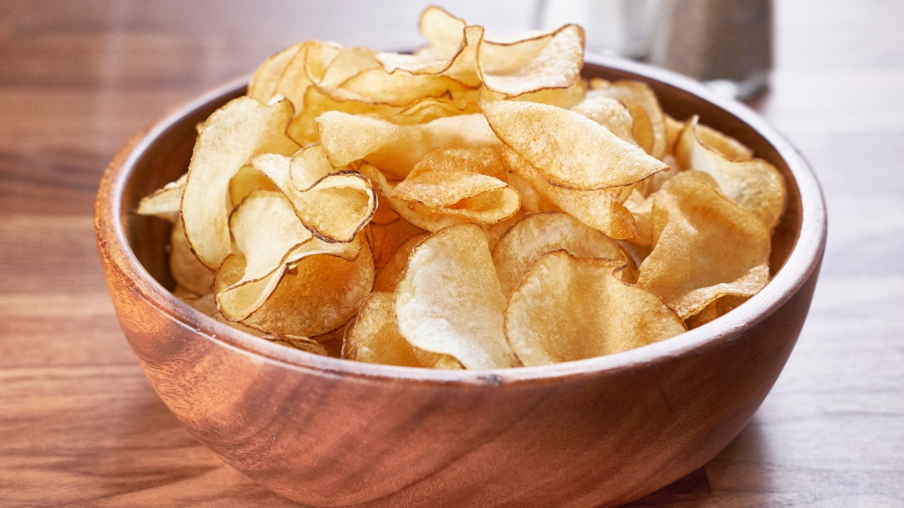

Odin Recipes
Garlic butter steak
Garlic butter steak

Description
The best steak you will ever eat, made right in your kitchen
Ingredients
- 1 ribeye steak, 2 inch (5 cm) thick, preferably USDA Prime
- 3 tablespoons canola oil
- 3 tablespoons butter
- 3 cloves garlic, peeled and smashed
- 2 sprigs fresh rosemary
- 3 sprigs fresh thyme
Steps
- Preheat oven to 200°F (95°C).
- Generously season all sides of the steak with salt and pepper.
- Transfer to a wire rack on top of a baking sheet, then bake for about 45 minutes to an hour until the internal temperature reads about 125°F (51° C) for medium-rare. Adjust the bake time based on if you like your steak more rare or more well-done (you monster).
- Heat the canola oil in a pan over high heat until smoking. Do not use olive oil, as its smoke point is significantly lower than that of canola oil and will smoke before reaching the desired cooking temperature.
- Sear the steak for 30 seconds on the first side, then flip.
- Add the butter, garlic, rosemary, and thyme and swirl around the pan.
- Transfer the garlic and herbs on top of the steak and baste the steak with the butter using a large spoon.
- Baste for about 30 seconds, then flip and baste the other side for about 15 seconds.
- Turn the steak on its side and cook to render off any excess fat.
- Rest the steak on a cutting board or wire rack for about 10 minutes. Slicing the steak before the resting period has finished will result in a lot of the juices leaking out, which may not be desirable.
- Slice the steak into ½ -inch (1 cm) strips, then fan out the slices and serve.
- Enjoy!
Lobster Roll
Lobster Roll

Description
Jewel from the ocean
Ingredients
- 4 cups water, for boiling (Use 1 1/2 cups of water per 1 lb. of lobster)
- 2 lbs. (0.1 kg) live small lobster or 1/2 lb. (0.2 kg) cooked lobster meat
- 3 tablespoons mayonnaise
- 1 teaspoon honey
- 1 teaspoon lemon juice
- 1 pinch salt
- 3 dashes ground black pepper
- 1/2 tablespoon chopped chives
- 3 hot dog buns
- 2 tablespoons unsalted butter
Steps
- Bring the water to boil. Add the lobsters, cover, and cook until they turn bright read, about 8 minutes.
- Remove the lobster, set aside and let cool. Crack the lobster shells, pick the meat from the tail and claws. Cut the lobster meat into bite-sized pieces.
- Add the mayonnaise, honey, lemon juice, salt, black pepper and chives together, set aside.
- Trim about 1/4 inch off both sides of the hot dog buns. Spread the butter on the sides. Heat up a skillet on medium heat and cook the sides until they are nicely toasted and become golden brown. Fill the inside of the buns with the lobsters. Serve immediately.
Potato Chips
Potato Chips

Description
The humble potato transformed into a tasty morsel
Ingredients
- 7 unpeeled medium potatoes
- 2 teaspoons garlic powder
- 1-1/2 teaspoons celery salt
- 1-1/2 teaspoons pepper
- 2 quarts ice water
- 5 teaspoons salt
- Oil for deep-fat frying
Steps
- Using a vegetable peeler or metal cheese slicer, cut potatoes into very thin slices. Place in a large bowl; add ice water and salt. Soak for 30 minutes.
- Drain potatoes; place on paper towels and pat dry. In a small bowl, combine the garlic powder, celery salt and pepper; set aside.
- In a cast-iron or other heavy skillet, heat 1-1/2 in. oil to 375°. Fry potatoes in batches until golden brown, 3-4 minutes, stirring frequently.
- Remove with a slotted spoon; drain on paper towels. Immediately sprinkle with seasoning mixture. Store in an airtight container.